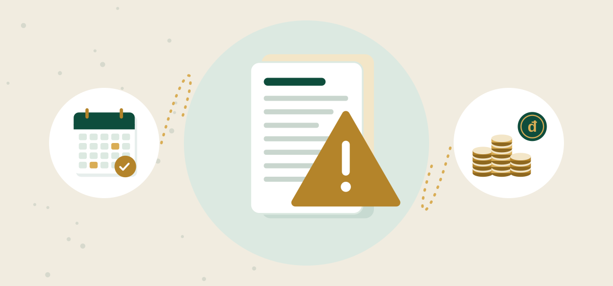

7 dấu hiệu sổ sách kế toán rủi ro, cần rà soát sổ sách kế toán ngay

Sổ sách kế toán hiếm khi hỏng trong một ngày. Rủi ro thường tích tụ từ những chênh lệch nhỏ không ai đối chiếu, đến khi quyết toán, hoàn thuế hoặc bị kiểm tra mới lộ ra. Dưới đây là 7 dấu hiệu cho thấy doanh nghiệp nên rà soát sổ sách kế toán ngay, do đội ngũ dịch vụ kế toán của ACCA Consulting Vietnam tổng hợp từ thực tế làm việc.
1. Vì sao cần rà soát sổ sách kế toán định kỳ
Tờ khai thuế được nộp đúng hạn chưa chắc đã đúng số. Cơ quan thuế có thể đối chiếu hoá đơn điện tử, tờ khai, dữ liệu BHXH và nhiều nguồn khác. Một chênh lệch nhỏ lặp lại nhiều tháng có thể thành khoản truy thu lớn, cộng thêm tiền chậm nộp 0,03%/ngày trên số thuế chậm nộp.
Rà soát sổ sách kế toán là việc một người độc lập đối chiếu lại số liệu: sổ sách với hoá đơn, sao kê, bảng lương và tờ khai. Mục tiêu là tìm lỗi sớm, khi còn sửa được bằng khai bổ sung hoặc bổ sung chứng từ, thay vì để cơ quan thuế phát hiện.
2. 7 dấu hiệu sổ sách kế toán đang có rủi ro
Dấu hiệu 1: Số dư tiền mặt lớn bất thường hoặc âm quỹ
Quỹ tiền mặt trên sổ lớn trong khi thực tế không có, hoặc có lúc âm quỹ, thường là do ghi nhận chi tiêu, rút tiền không đúng. Đây là dấu hiệu sổ đang được "cân" cho khớp thay vì phản ánh đúng thực tế.
Dấu hiệu 2: Hoá đơn lớn thanh toán bằng tiền mặt
Theo Luật Thuế GTGT 2024 (hiệu lực 01/07/2025), hoá đơn mua hàng từ 5 triệu đồng trở lên (đã có thuế GTGT) phải thanh toán không dùng tiền mặt mới được khấu trừ thuế GTGT đầu vào. Nếu sổ có nhiều khoản như vậy trả bằng tiền mặt, số thuế đã khấu trừ có thể bị loại.
Dấu hiệu 3: Doanh thu trên sổ lệch hoá đơn đầu ra hoặc sao kê
Tiền về tài khoản mà không có hoá đơn tương ứng, hoặc hoá đơn đã xuất nhưng chưa ghi doanh thu, đều là chênh lệch phải giải trình.
Dấu hiệu 4: Lương trên sổ không khớp BHXH và tờ khai TNCN
Chi phí lương ghi sổ khác mức lương đóng bảo hiểm, khác số liệu trên tờ khai TNCN, hoặc có người nhận lương nhưng không có hợp đồng lao động. Doanh nghiệp đóng 21,5% và người lao động đóng 10,5% trên tiền lương đóng BHXH, nên khoản này dễ bị đối chiếu.
- BHXH17,5%
- BHYT3%
- BHTN1%
Ví dụ minh hoạ: lương đóng BHXH 10 triệu đồng thì doanh nghiệp đóng 2.150.000đ, người lao động đóng 1.050.000đ (10,5%).
Xem dạng bảng
| BHXH | 17,5% |
| BHYT | 3% |
| BHTN | 1% |
Dấu hiệu 5: Công nợ treo nhiều năm không đối chiếu
Khoản phải thu, phải trả tồn từ nhiều năm, không có biên bản đối chiếu, khiến số liệu báo cáo tài chính không đáng tin và khó giải trình khi bị kiểm tra.
Dấu hiệu 6: Tạm nộp TNDN thấp hơn nhiều so với quyết toán
Tổng 4 quý tạm nộp TNDN không được thấp hơn 80% số thuế phải nộp theo quyết toán năm. Nếu năm nào cũng chênh lớn, doanh nghiệp đang không theo dõi lợi nhuận trong năm.
Dấu hiệu 7: Thiếu chứng từ gốc hoặc đổi kế toán liên tục
Chứng từ dùng ghi sổ, lập BCTC phải lưu tối thiểu 10 năm theo Luật Kế toán 2015. Doanh nghiệp đổi kế toán nhiều lần mà không bàn giao đầy đủ thường mất chứng từ, mất file sổ, và không ai nắm được số liệu các năm cũ.

3. Bảng tự đánh giá mức độ rủi ro
| Dấu hiệu | Cách tự kiểm tra | Mức ưu tiên |
|---|---|---|
| Quỹ tiền mặt bất thường | So số dư quỹ trên sổ với tiền thực có | Cao |
| Hoá đơn từ 5 triệu trả tiền mặt | Lọc hoá đơn đầu vào từ 5 triệu đồng, xem phương thức thanh toán | Cao |
| Doanh thu lệch hoá đơn, sao kê | Cộng hoá đơn đầu ra, so với sổ và tiền về tài khoản | Cao |
| Lương lệch BHXH, TNCN | So bảng lương với dữ liệu BHXH và tờ khai TNCN | Trung bình |
| Công nợ treo | Liệt kê khoản tồn trên 12 tháng chưa đối chiếu | Trung bình |
| Tạm nộp TNDN thiếu | So tổng 4 quý tạm nộp với số quyết toán | Trung bình |
| Thiếu chứng từ, đổi kế toán | Kiểm tra biên bản bàn giao và kho chứng từ | Cao |
- Tờ khai thuế và BCTC của 2–3 năm gần nhất
- Sổ cái, sổ chi tiết tiền mặt, tiền gửi, công nợ
- Danh sách hoá đơn đầu vào, đầu ra từ hệ thống hoá đơn điện tử
- Sao kê ngân hàng các năm tương ứng
- Bảng lương, hợp đồng lao động, dữ liệu BHXH
4. Quy trình rà soát sổ sách kế toán tại ACCA
- 1Tiếp nhận
Doanh nghiệp gửi tờ khai, sổ sách, sao kê của kỳ cần rà soát.
- 2Rà soát sơ bộ miễn phí
ACCA đối chiếu nhanh và lập danh sách điểm rủi ro.
- 3Báo cáo kết quả
Giải thích từng rủi ro, mức độ và hướng xử lý đề xuất.
- 4Xử lý chi tiết
Bổ sung chứng từ, điều chỉnh sổ, khai bổ sung nếu cần (báo giá riêng).
- 5Duy trì
Đối chiếu hằng tháng để rủi ro không lặp lại.
Rà soát sơ bộ đặc biệt nên làm trước các thời điểm nhạy cảm: quyết toán năm, đề nghị hoàn thuế, giải thể, chuyển nhượng vốn, hoặc khi nhận thông báo kiểm tra. Xem thêm bài chuẩn bị kiểm tra quyết toán thuế.
5. Sau khi rà soát: giữ sổ sạch bằng thói quen hằng tháng
- Khoá sổ mỗi tháng: đối chiếu ngân hàng, hoá đơn và quỹ tiền mặt.
- Thanh toán nhà cung cấp qua ngân hàng với hoá đơn từ 5 triệu đồng trở lên.
- Đối chiếu công nợ với khách hàng, nhà cung cấp ít nhất cuối mỗi năm.
- Ước tính lợi nhuận giữa năm để tạm nộp TNDN đủ.
- Bàn giao đầy đủ sổ, file và chứng từ mỗi khi đổi người làm kế toán.
Một dịch vụ kế toán làm đều tay mỗi tháng sẽ rẻ hơn nhiều so với việc dựng lại sổ cho vài năm cùng lúc. Với sổ sách được ghi chép và đối chiếu đều đặn, doanh nghiệp luôn có số liệu rõ ràng để tự tin khi làm việc với cơ quan thuế.
Câu hỏi thường gặp
Bao lâu nên rà soát sổ sách kế toán một lần?
Nên rà soát ít nhất mỗi năm một lần trước quyết toán, và thêm một lần trước các sự kiện như hoàn thuế, giải thể, chuyển nhượng vốn hoặc khi đổi kế toán.
Rà soát sơ bộ tại ACCA có mất phí không?
Không. ACCA kiểm tra sơ bộ miễn phí và gửi danh sách điểm rủi ro. Nếu cần xử lý chi tiết như bổ sung chứng từ, điều chỉnh sổ, ACCA báo giá riêng theo khối lượng.
Phát hiện sai sót năm cũ thì xử lý thế nào?
Tuỳ từng sai sót: bổ sung chứng từ, điều chỉnh sổ hoặc khai bổ sung và nộp thêm thuế kèm tiền chậm nộp. Xử lý càng sớm, tiền chậm nộp càng ít.
Doanh nghiệp nhỏ có cần rà soát sổ sách không?
Có. Doanh nghiệp nhỏ thường ít người kiểm tra chéo nên lỗi dễ tồn đọng lâu. Một lần rà soát sơ bộ giúp biết ngay sổ đang ở mức an toàn hay cần xử lý.
Rà soát sổ sách kế toán miễn phí
ACCA Consulting Vietnam cung cấp dịch vụ kế toán tại TP.HCM và rà soát sơ bộ sổ sách miễn phí cho doanh nghiệp. Gọi hoặc Zalo 0938 847 699 để gửi hồ sơ.
Nhận tư vấn miễn phí Zalo 0938 847 699 Kiểm tra quyết toán thuế: chuẩn bị gì để không bị truy thu
Kiểm tra quyết toán thuế: chuẩn bị gì để không bị truy thu Dịch vụ kế toán giá rẻ: rẻ bao nhiêu là hợp lý và 6 rủi ro cần tránh
Dịch vụ kế toán giá rẻ: rẻ bao nhiêu là hợp lý và 6 rủi ro cần tránh Mức phạt chậm nộp tờ khai thuế và cách tránh
Mức phạt chậm nộp tờ khai thuế và cách tránh